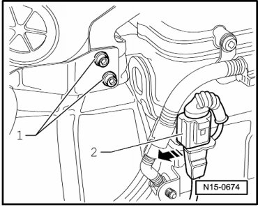
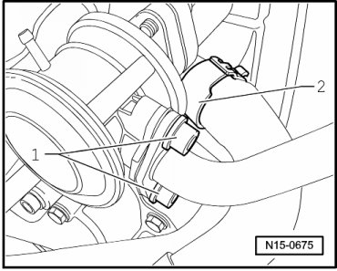
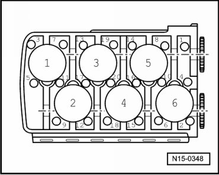
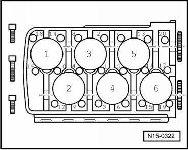
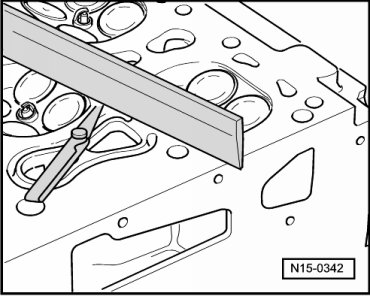

Cylinder Head
Cylinder Head
Special tools, testers and auxiliary items required
• Lifting tackle (3033)
• Wrench (3452)
• Camshaft bar (T10068 A)
• Drip tray (V.A.G 1306)
• Torque wrench (5 to 50 Nm) (V.A.G 1331)
• Torque wrench (40 to 200 Nm) (V.A.G 1332)
• Spring-type clip pliers (VAS 5024A)
• Sealant (D 176 501 A1)
• Cable tie
• Shop crane (VAS 6100)
• To remove the cylinder head the engine must first be removed --> [ Engine Removing ] Engine Removing.
• If a replacement cylinder head is installed, all contact surfaces between support elements, roller cam followers and cam lubricating surfaces of camshafts must be oiled before installing the cylinder head cover.
• The plastic protectors installed to protect the open valves must only be removed immediately before fitting the cylinder head.
• When replacing the cylinder head or cylinder gasket, the complete amount of coolant must be replaced.
Requirements
• Engine must be removed.
• The engine must be no more than warm to touch.
Removing
CAUTION!
When doing any repair work, especially in the engine compartment, pay attention to the following due to clearance issues:
• Route all the various lines (e.g. for fuel, hydraulics, EVAP system, coolant, refrigerant, brake fluid and vacuum lines and hoses) and electrical wiring so that the original positions are restored.
• Ensure sufficient clearance to all moving or hot components.
- All cable ties which are opened or cut open when removing, must be replaced in the same position when installing.
- Adjust crankshaft at securing bolt of vibration damper in direction of engine rotation to TDC cyl. 1 marking - arrow -.

- Remove ribbed belt --> [ Ribbed Belt ] Ribbed Belt.
- Remove intake manifold and cylinder head cover --> [ Cylinder Head Cover ] Cylinder Head Cover.
- Unbolt connecting line - 1 - at bracket for intake manifold support and pull connector for Knock Densor (KS) 1 (G61) - 2 - out of its bracket.

- Unclip wire from retainer on cylinder head.
- Unbolt connecting line from combination valve - 1 - and pull off coolant hose - 2 - below combination valve on cylinder head.

- Unbolt exhaust manifold from cylinder head.
- Disconnect connectors from camshaft adjustment valve 1, intake (N205) and camshaft adjustment valve 1, exhaust (N318).
• Before disconnecting harness connectors, mark allocation to component.
- Unbolt securing clamps for wiring harness at bracket.
- Remove only the thermostat housing --> [ Cooling System Components, Engine Side, Assembly Overview ] Cooling System Components, Engine Side, Assembly Overview.
- Remove camshaft roller chain tensioner - arrow -.

- Remove cover --> [ Cylinder Head Cover, Assembly Overview ] Cylinder Head Cover, Assembly Overview.
• The cover has a "hidden bolt". It can be removed only after the thermostat housing has been removed.
- When all securing bolts have been removed, cover can be carefully pried off.
- Remove bolts for camshaft adjuster --> [ (Item 23) 60 Nm + / turn (90°) ] Cylinder Head, Assembly Overview.
• When loosening or tightening the camshaft adjuster, counter-hold only with 32 mm open end wrench on camshaft - arrow -. camshaft bar (T10068 A) must not be installed during this process.

- Remove camshaft adjuster together with camshaft roller chain from the intake camshaft.
- Remove the exhaust camshaft adjuster.
- Remove guide rail securing bolts - arrow - and remove guide rail - 1 -.

- Place camshaft roller chain aside.
- Loosen and unscrew cylinder head bolts in specified sequence starting from outside working toward inside.

• Use polydrive key (3452) for polydrive cylinder head bolts.
- Engage lifting tackle (3033) as shown and carefully lift off cylinder head using workshop crane (VAS 6100) or (V.A.G 1202 A):

Vibration damper side: Position 3
Flywheel side: Position 11
• The positions of lifting tackle (3033) inscribed with 1 to 12 point toward flywheel side.
• Threaded spindles are set in length according to necessity.
- Carefully lift cylinder head off.
- Stuff clean cloths into cylinder so that no dirt or abrasive powder can get between cylinder wall and piston.
- Also prevent dirt and emery cloth particles from getting into the coolant.
- Carefully clean cylinder head and cylinder block sealing surfaces. Avoid introducing scratches or scoring (do not use sandpaper with grit below " 100")
- Clean all threaded bores for cylinder head bolts.
Installing
- Carefully remove metal particles, emery remains and cloths.
If the piston for cylinder 1 is not at TDC:
- Adjust crankshaft at securing bolt of vibration damper in direction of engine rotation to TDC cyl. 1 marking - arrow -. When doing this, guide camshaft roller chain by hand with aid of a 2nd technician.
• Only remove the new cylinder head gasket from its packing immediately before installing.
• Handle the new gasket with extreme care. Damaging will lead to leaks.
- Install new cylinder head gasket. Install new cylinder head gasket. Inscription (Part No.) must be legible.
- Ensure that alignment bushings are inserted into cylinder block holes 12 and 20 and that cylinder head gasket is seated.

- Position the camshafts in cylinder head to TDC No. 1 cylinder. 1.
- It must be possible to insert camshaft bar (T10068 A) into both shaft grooves.

- Prepare cylinder head gasket for installation --> [ Cylinder Head Gasket, Preparing for Assembly ] Cylinder Head Cover, Assembly Overview
- Install cylinder head, insert new cylinder head bolts and hand tighten.
- Tighten cylinder head bolts in sequence as follows from inside to outside.
• The longer cylinder head bolts must be inserted in the middle holes of cylinder head.
- Pre-tighten all the bolts to 30 Nm.
- Then tighten all the bolts to 50 Nm.
- Tighten all bolts (1/4 turn) (90°) further using a rigid wrench.
- Afterwards, tighten all bolts again 1/4 turn (90°) further
The rest of the assembly is basically a reverse of the disassembling sequence.
How to adjust valve timing --> [ Intermediate Driveshaft and Camshaft Drive Timing Chains, Installing ] Intermediate Driveshaft and Camshaft Drive Timing Chains, Installing.
• Make sure that the O-ring for sealing the oil gallery and the seal in the cover are installed.
- Install cylinder head cover and intake manifold --> [ Cylinder Head Cover ] Cylinder Head Cover.
Fill with new coolant --> [ Cooling System, Draining and Filling ] Procedures.
• There is no requirement to retighten the cylinder head bolts after repairs.
Checking Cylinder Head for Distortion

Special tools, testers and auxiliary items required
• Straight edge
• Feeler gauge
Max. permissible distortion: 0.05 mm